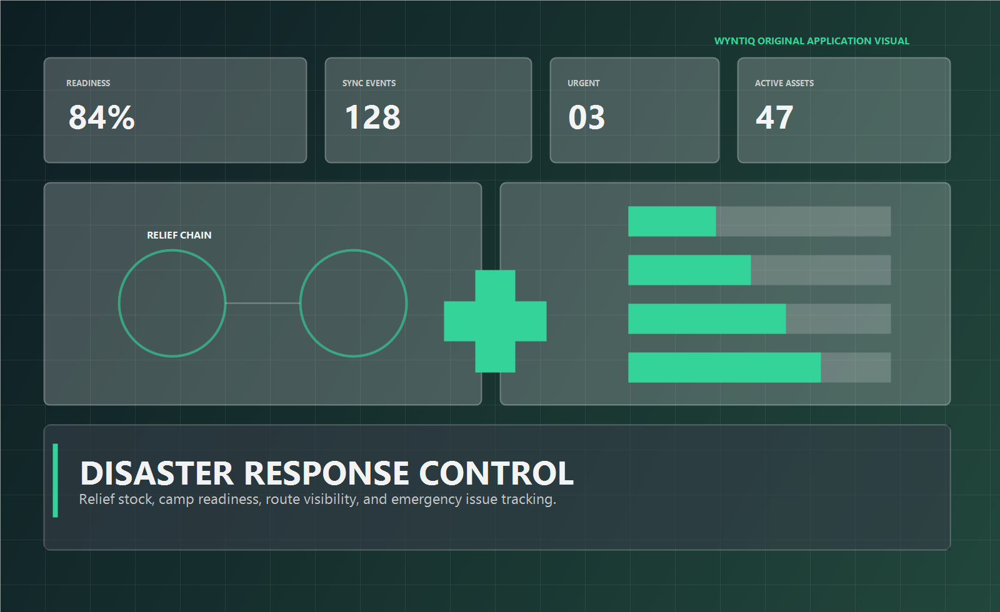

Mesh Diagnostics
Show disrupted links, delayed camps, and recoverable paths.

Camp sync queue12 events
Route health68%
Last restored nodeRelief Camp B
Fallback pathWi-Fi or USB transfer
WYNTIQ helps relief teams manage camp stock, critical supply flows, route visibility, mobile teams, and disconnected field coordination during floods, quakes, and crisis deployments.

In disaster response, the first system to fail is often connectivity. The coordination system still has to work.
Track food, water, medical kits, shelter material, and replenishment pressure across multiple camps.
Make urgent requests visible, approved, and traceable without burdening teams with heavy process.
Help coordinators see where crews, vehicles, and stock movements are delayed or restored.
Camp stock alert, med-kit request, route disruption, and delivery confirmation in one field stream.
Subtle icons and controlled accents keep the page readable without collapsing into generic NGO-site visuals.
When teams reconnect, the system should merge truth instead of making them re-enter it.
Emergency and public-sector teams usually need to see the workflow first, then evaluate it through a bounded pilot.